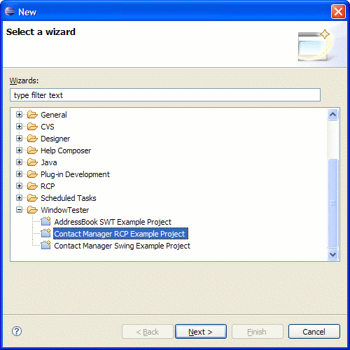
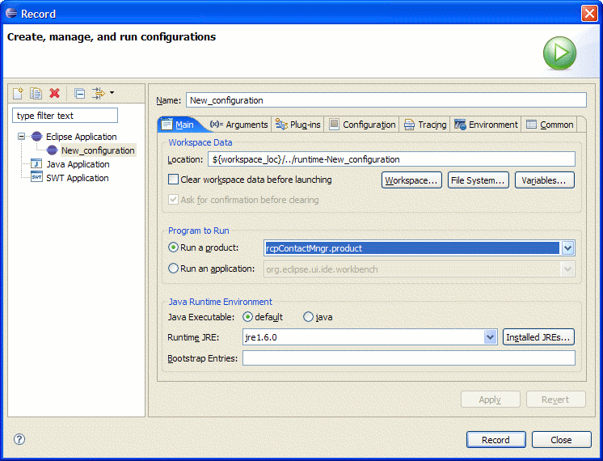
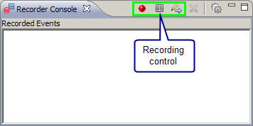
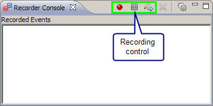
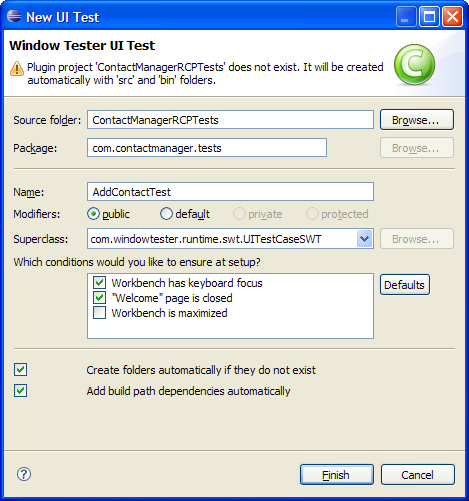
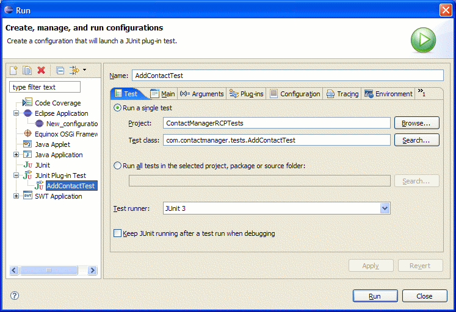

Record and Playback a Sample RCP Test
The following describes how to record and playback a UI test for
RCP applications:
Prerequisite: This tutorial
requires either RCP Developer v2.7.0 and above or WindowTester Pro 2.2.0 and
above.
- Import the sample Contact Manager
RCP project.
- Launch recording session and record user
interactions.
- Stop recording and save recorded test.
- Play back the recorded test.
- Slower playback (optional).
- Select File >
Import from the main menu.

- Expand WindowTester Pro and
select Contact Manager RCP
Example Project. Please
note, this wizard is only available in WindowTester Pro v2.2.0 and above.
- Click Next.
- Click Finish. The ContactManagerRCP project is now
created in your workspace.
Look for a tool item ( ) that looks
like the run arrow with a little console under it (should be next to
external tools).
- From its pull-down menu select "Record
Configurations...".


- In the Record configuration dialog, select Eclipse Application on the left
navigation.
- Click the New icon ( ).
- Select rcpContactMngr.poduct
from the Run a product drop-down.
- Click the Record button. This will run the Contact
Manager application in recording mode and opens the recording control shown below.
 

- To start recording, click on the record button (red ball) in the
recorder. Perform user interactions like adding a new contact.In
the Contact Manager application, select File > New
Contact.
To stop recording, close the application. The recorder
disappears and a new UI Test dialog opens.

- Enter the name of a test project such as ContactManagerRCPTests. We recommend
that tests be placed into a project separate from the code under
test.
- Create folder
automatically if they do not exist - If the Source folder does not
exist and this option is checked, it will automatically create the
test project with the src and bin folders. If your project structure does not
have a separate src and bin folders, uncheck this option and make
sure your test project exists.
- Enter the package name such as com.contactmanager.tests.
- Enter the name of a test case such as AddContactTest
- The rest can be default. For more information see the Code generation page.
- Click Finish to generate this test.
You should now see a test project with the generated test case in
your workspace.
RCP application UI tests must be run as JUnit Plug-in tests.
To playback the test, first create a new JUnit Plugin Test launch
configuration.

- Select the AddContactTest.java
class.
- Select the Run > Run... menu to open the run
configuration dialog.
- Select JUnit Plugin Test on the left navigation.
- Click the New ( ) icon.
- Switch to the Main tab.

- Select rcpContactMngr.product from the Run a
product drop-down.
- Click Run. This launches the Contact Manager
application and runs your test.
You can slow down the playback by enabling the
playback delay
preference
.
Related FAQs:
If you're getting
ClassCastExceptions or NoClassDefFound
errors, see
How can I can add my RCP app to my Testing
plugin classpath so that I can access classes from my RCP app?
Related Topic:
Adding Assertions (Optional)
Assertions can be generated at recording time using the assertion inspector tool. The assertion inspector is activated by clicking the inspector tool item on the recording controller.
See the Assertion Inspector documentation.